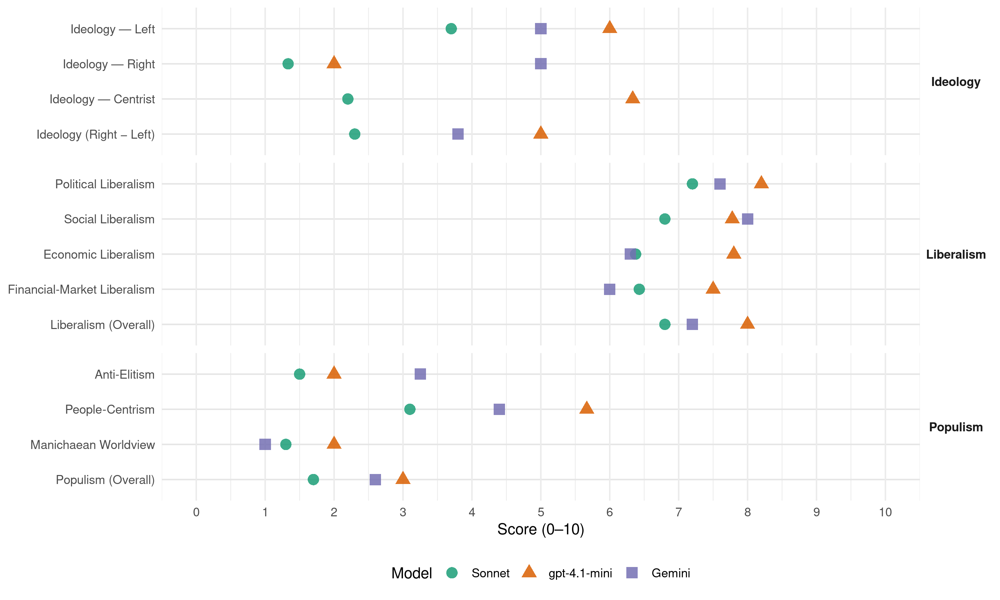

PASOK (Greece, 2004)
manifesto_id 34313_200403
Get full text: This site shows derived annotations and short verbatim quotes only. The full manifesto text is © Manifesto Project / WZB — obtain it via manifesto-project.wzb.eu using the manifesto_id above.
Headline scores
| Dimension | Sonnet | gpt-4.1-mini | Gemini |
|---|---|---|---|
| Populism (Overall) | 1.7 | 3.0 | 2.6 |
| Anti-Elitism | 1.5 | 2.0 | 3.2 |
| People-Centrism | 3.1 | 5.7 | 4.4 |
| Manichaean Worldview | 1.3 | 2.0 | 1.0 |
| Ideology (Right − Left) | 2.3 | 5.0 | 3.8 |
| Liberalism (Overall) | 6.8 | 8.0 | 7.2 |
| Political Liberalism | 7.2 | 8.2 | 7.6 |
| Social Liberalism | 6.8 | 7.8 | 8.0 |
| Economic Liberalism | 6.4 | 7.8 | 6.3 |
| Financial-Market Liberalism | 6.4 | 7.5 | 6.0 |
Evidence per dimension
Economic Liberalism
Gemini · score 8.0 · verified · chunk 1
“ολοκλήρωση της απελευθέρωσης των αγορών”
Βασική κατεύθυνση του προγράμματός μας είναι η ολοκλήρωση της απελευθέρωσης των αγορών και των επαγγελμάτων προκειμένου να δημιουργηθούν
Gemini · score 8.0 · verified · chunk 2
“υγιούς και θεμιτού ανταγωνισμού”
με όρους υγιούς και θεμιτού ανταγωνισμού και αποτελεσματική προστασία
Gemini · score 8.0 · verified · chunk 3
“προωθούμε την απελευθέρωση της αγοράς”
Ενδυναμώνουμε τις ιδιωτικές επενδύσεις και προωθούμε την απελευθέρωση της αγοράς αερίου. Αυξάνουμε
Gemini · score 4.0 · verified · chunk 4
“υγιούς ανταγωνισμού μεταξύ βιομηχανίας”
Η διασφάλιση του υγιούς ανταγωνισμού μεταξύ βιομηχανίας και λιανικού εμπορίου.
Gemini · score 6.0 · verified · chunk 5
“μείωση του κόστους για τις επιχειρήσεις”
Την κινητοποίηση των ανέργων για κάλυψη κενών θέσεων εργασίας. Τη δημιουργία νέων θέσεων εργασίας με μείωση του κόστους για τις επιχειρήσεις.
Gemini · score 7.0 · verified · chunk 6
“στο πλαίσιο της απελευθερωμένης αγοράς”
την ενθάρρυνση ανεξάρτητων παραγωγών στο πλαίσιο της απελευθερωμένης αγοράς και την προώθηση των αναγκαίων
Gemini · score 7.0 · verified · chunk 7
“εγκεκριμένα του ελεύθερου εμπορίου”
β) Κάθε σχολική μονάδα μπορεί να επιλέγει τα σχολικά βιβλία που θα χρησιμοποιήσει, ανάμεσα σε πολλά εγκεκριμένα του ελεύθερου εμπορίου.
Gemini · score 4.0 · verified · chunk 8
“απάντηση στον νέο-φιλελευθερισμό, στην αποξένωση του πολίτη από την πολιτική, στην απορύθμιση των αγορών”
Είναι η Προοδευτική Διακυβέρνηση, η απάντηση στον νέο-φιλελευθερισμό, στην αποξένωση του πολίτη από την πολιτική, στην απορύθμιση των αγορών, στην εμπορευματοποίηση
Gemini · score 4.0 · verified · chunk 9
“νεοφιλελεύθερη εκδοχή της παγκοσμιοποίησης”
Είμαστε αντίθετοι με την νεοφιλελεύθερη εκδοχή της παγκοσμιοποίησης που διευρύνει τις ανισότητες
Gemini · score 7.0 · verified · chunk 10
“ενίσχυση της ανταγωνιστικής παρουσίας της χώρας”
εθνικής σημασίας με πολλαπλά και συμπληρωματικά οφέλη για την εθνική οικονομία, για την ενίσχυση της ανταγωνιστικής παρουσίας της χώρας μας στον
gpt-4.1-mini · score 9.0 · verified · chunk 1
“Προωθούμε την ισότιμη συμμετοχή των ελληνικών επιχειρήσεων στις εξελίξεις των διεθνών αγορών”
Σταθερή επιδίωξη της πολιτικής του ΠΑΣΟΚ είναι η διατήρηση και η ενίσχυση του αναπτυξιακού ρόλου των ΜΜΕ. Προωθούμε την ισότιμη συμμετοχή των ελληνικών επιχειρήσεων στις εξελίξεις των διεθνών αγορών, ενθαρρύνοντας τις προσπάθειες που κάνουν και τις πρωτοβουλίες που παίρνουν οι Έλληνες επιχειρηματίες για να καινοτομήσουν, να γίνουν πιο ανταγωνιστικοί, περισσότερο εξωστρεφείς.
gpt-4.1-mini · score 9.0 · verified · chunk 2
“αγορά, ανταγωνισμός, επιχειρήσεις, φορολογία, ιδιωτικοποίηση, ελεύθερο εμπόριο”
…ενίσχυση της αγοράς, ανταγωνισμός, επιχειρήσεις, φορολογία, ιδιωτικοποίηση, ελεύθερο εμπόριο και…
gpt-4.1-mini · score 8.0 · verified · chunk 3
“Η απελευθέρωση της αγοράς ηλεκτρικής ενέργειας και η εισαγωγή του φυσικού αερίου προκαλούν βαθιές αλλαγές στο ενεργειακό σύστημα της χώρας”
…Η απελευθέρωση της αγοράς ηλεκτρικής ενέργειας και η εισαγωγή του φυσικού αερίου προκαλούν βαθιές αλλαγές στο ενεργειακό σύστημα της χώρας. Διαμορφώνεται ένα πιο σύνθετο, αλλά ενιαίο, ευέλικτο και ανταγωνιστικό ενεργειακό σύστημα, που επιτρέπει σε ευρεία κλίμακα την επιλογή τόσο μορφών ενέργειας, όσο και προμηθευτών με στόχο πάντοτε τη μείωση της τιμής….
gpt-4.1-mini · score 7.0 · verified · chunk 4
“Η ανάπτυξη χτίζει το ανταγωνιστικό πλεονέκτημά της πάνω στο ανθρώπινο δυναμικό, επενδύει σε αυτό”
Η ανάπτυξη χτίζει το ανταγωνιστικό πλεονέκτημά της πάνω στο ανθρώπινο δυναμικό, επενδύει σε αυτό και έτσι λύνει το δίλημμα «ανάπτυξη ή αλληλεγγύη» αξιοποιώντας την κοινωνική συνοχή ως κρίσιμο συστατικό στην αναπτυξιακή προσπάθεια.
gpt-4.1-mini · score 8.0 · verified · chunk 5
“αγορά, ανταγωνισμός, επιχειρήσεις, φορολογία, ιδιωτικοποίηση, εμπορίου, ρύθμιση”
…Η αύξηση των κοινωνικών δαπανών - η μεγαλύτερη από το 1981 - χρηματοδοτήθηκε με υγιή τρόπο - χωρίς να θέσει σε κίνδυνο την μακροοικονομική πορεία της χώρας. Παλαιότερα, αυξήσεις κοινωνικών δαπανών, χρηματοδοτούνταν με δανεικά, οπότε αφού διαρκούσαν 2-3 χρόνια, μετά αναγκαστικά αναιρούνταν, αφού τις ακολουθούσε πληθωρισμός ή προβλήματα στο ισοζύγιο πληρωμών. Η χρηματοδότηση δεν έγινε με αυξημένη φορολογία, αλλά προήλθε από δύο πλευρές: Από την ίδια την ανάπτυξη. Μέσω της σύλληψης της φορολογητέας ύλης, που έως τότε διέφευγε. Χρηματοδοτήθηκε δηλαδή μέσω καλύτερης διακυβέρνησης.
gpt-4.1-mini · score 7.0 · verified · chunk 6
“ενίσχυση επιχειρήσεων, προγράμματα επιμόρφωσης. Διαχείριση αποβλήτων. Ανανεώσιμες Πηγές Ενέργειας. Προστασία και διαχείριση των υδάτων.”
Οι πολιτικές για την προστασία του περιβάλλοντος και τη βιώσιμη ανάπτυξη δημιουργούν σημαντικές δυνατότητες απασχόλησης και ευκαιρίες ανάπτυξης επιχειρηματικότητας. Στην κατεύθυνση αυτή θα δουλέψουμε συστηματικά την επόμενη τετραετία αξιοποιώντας πρόσφορα μέσα όπως: ενίσχυση της έρευνας, ενίσχυση επιχειρήσεων, προγράμματα επιμόρφωσης. Διαχείριση αποβλήτων. Ανανεώσιμες Πηγές Ενέργειας. Προστασία και διαχείριση των υδάτων.
gpt-4.1-mini · score 8.0 · verified · chunk 7
“«επιχειρηματικότητα», «φορολογικά κίνητρα», «μικρομεσαίων επιχειρήσεων»”
…φορολογικών κινήτρων για την τόνωση της επιχειρηματικότητας, την ενίσχυση μικρομεσαίων επιχειρήσεων και τη δημιουργία δικτύων…
gpt-4.1-mini · score 7.0 · verified · chunk 8
“απελευθερώσει τις ατομικές δυνάμεις κάθε πολίτη”
Να απελευθερώσει τις ατομικές δυνάμεις κάθε πολίτη και τις συλλογικές δυνάμεις της κοινωνίας, προσφέροντας συνθήκες αξιοκρατίας.
gpt-4.1-mini · score 7.0 · verified · chunk 9
“ενίσχυση των διαρθρωτικών ταμείων”
Για τη θέσπιση ολοκληρωμένων πολιτικών για την απασχόληση και την «κοινωνική στήριξη» σε όλα τα επίπεδα. Για τη στήριξη των αγροτών και την ανάπτυξη της υπαίθρου. Για την ενδυνάμωση των πολιτικών συνοχής και ενίσχυση των διαρθρωτικών ταμείων. Στόχος μας είναι ο προϋπολογισμός της Ένωσης, από το 1,27 του ΑΕΠ της Ένωσης που είναι σήμερα, να αυξηθεί μεσοπρόθεσμα τουλάχιστον στο 3% του ΑΕΠ για να ανταποκριθεί η Ε.Ε. στις κοινωνικές ανάγκες των πολιτών της.
gpt-4.1-mini · score 8.0 · verified · chunk 10
“Η οικονομία όχι μόνο δεν επιβαρύνεται, αλλά αντίθετα ενισχύεται”
…με απόλυτη δημοσιονομική πειθαρχία, με καθημερινή παρακολούθηση του Ολυμπιακού προϋπολογισμού, με αναπτυξιακές και όχι πρόσκαιρες προτεραιότητες. Η οικονομία όχι μόνο δεν επιβαρύνεται, αλλά αντίθετα ενισχύεται, αποκτά νέο δυναμισμό…
Sonnet · score 8.0 · verified · chunk 1
“ολοκλήρωση της απελευθέρωσης των αγορών”
Βασική κατεύθυνση του προγράμματός μας είναι η ολοκλήρωση της απελευθέρωσης των αγορών και των επαγγελμάτων
Sonnet · score 8.0 · verified · chunk 2
“υγιούς και θεμιτού ανταγωνισμού”
η εύρυθμη λειτουργία των αγορών με όρους υγιούς και θεμιτού ανταγωνισμού και αποτελεσματική προστασία των καταναλωτών.
Sonnet · score 7.0 · verified · chunk 3
“απελευθέρωση της αγοράς ηλεκτρικής ενέργειας”
Η απελευθέρωση της αγοράς ηλεκτρικής ενέργειας και η εισαγωγή του φυσικού αερίου προκαλούν βαθιές αλλαγές στο ενεργειακό σύστημα της χώρας.
Sonnet · score 4.0 · verified · chunk 4
“το αξίωμα ότι οι αγορές δεν αποτυγχάνουν”
Το αξίωμα ότι οι αγορές δεν αποτυγχάνουν, ότι η οικονομία πρέπει να αφεθεί στον ‘αυτόματο πιλότο’, είναι ανιστόρητο και επικίνδυνο
Sonnet · score 6.0 · verified · chunk 5
“μείωση του κόστους για τις επιχειρήσεις”
Τη δημιουργία νέων θέσεων εργασίας με μείωση του κόστους για τις επιχειρήσεις. Σκοπός μας είναι η επίτευξη μιας γενικότερης συμφωνίας ανάμεσα στο κράτος, τους εργοδότες και τους εργαζόμενους
Sonnet · score 6.0 · verified · chunk 6
“απελευθερωμένης αγοράς”
αξιοποιώντας τις δυνατότητες που παρέχει η απελευθέρωση της αγοράς ηλεκτρικής ενέργειας
Sonnet · score 6.0 · verified · chunk 7
“φορολογικά κίνητρα για εκπαίδευση ανέργων”
Επιδότηση επιχειρήσεων και φορολογικά κίνητρα για εκπαίδευση ανέργων και προσωπικού
Sonnet · score 5.0 · mixed · chunk 8
“αυτονομία της κοινωνίας, τα όρια της αγοράς”
Να προσδιορίσει ξανά την αυτονομία της κοινωνίας, τα όρια της αγοράς, το ρόλο της πολιτείας, στην εποχή της παγκοσμιοποίησης
Sonnet · score 5.0 · mixed · chunk 9
“αντίθετοι με την νεοφιλελεύθερη εκδοχή”
Είμαστε αντίθετοι με την νεοφιλελεύθερη εκδοχή της παγκοσμιοποίησης που διευρύνει τις ανισότητες και τα φαινόμενα του κοινωνικού αποκλεισμού
Sonnet · score 6.0 · verified · chunk 10
“ενισχύεται η ανταγωνιστικότητα”
ενός συστηματικού, φιλόδοξου και σφαιρικού σχεδίου πραγματικού εκσυγχρονισμού της χώρας σε όλους τους τομείς: στις υποδομές, στις νοοτροπίες, στις μεθόδους εργασίας, στην ανταγωνιστικότητα
Financial-Market Liberalism
Gemini · score 8.0 · verified · chunk 1
“ασφάλεια και τη φερεγγυότητα του χρηματοοικονομικού συστήματος”
ρυθμιστικό περιβάλλον, που να διασφαλίζει τους όρους υγιούς ανταγωνισμού, την προστασία του καταναλωτή, καθώς και την ασφάλεια και τη φερεγγυότητα του χρηματοοικονομικού συστήματος
Gemini · score 8.0 · verified · chunk 2
“πρόσβασης των ΜΜΕ στο χρηματοπιστωτικό σύστημα”
Νέες δυνατότητες πρόσβασης των ΜΜΕ στο χρηματοπιστωτικό σύστημα Η δημοσιονομική προσαρμογή
Gemini · score 3.0 · verified · chunk 4
“κόστος δανεισμού των αγροτών”
Μειώθηκε θεαματικά κατά την τελευταία δεκαετία το κόστος δανεισμού των αγροτών και από 25% που ήταν το 1993 ανέρχεται πλέον σε 4,5%
Gemini · score 7.0 · verified · chunk 6
“κινητοποίηση ιδιωτικών κεφαλαίων για τις αναπλάσεις”
κατάλληλου θεσμικού πλαισίου για την κινητοποίηση ιδιωτικών κεφαλαίων για τις αναπλάσεις των πόλεων και τη δημιουργία
Gemini · score 3.0 · verified · chunk 8
“ανεξάρτητης λειτουργίας της Επιτροπής Κεφαλαιαγοράς και της Επιτροπής Ανταγωνισμού”
Συντονισμός των Ανεξάρτητων Αρχών (Α.Α.) με τα δικαστήρια και ιδίως τις εισαγγελικές αρχές. Ενίσχυση και εξειδίκευση των ερευνητικών - ελεγκτικών αρμοδιοτήτων τους. Ενίσχυση της ανεξάρτητης λειτουργίας της Επιτροπής Κεφαλαιαγοράς και της Επιτροπής Ανταγωνισμού.
Gemini · score 7.0 · verified · chunk 9
“ανεξαρτητοποίηση της Επιτροπής Κεφαλαιαγοράς”
Πλήρης ανεξαρτητοποίηση της Επιτροπής Κεφαλαιαγοράς και της Επιτροπής Ανταγωνισμού.
gpt-4.1-mini · score 8.0 · verified · chunk 1
“ενίσχυση της προστασίας του συστήματος συναλλαγών και εκκαθάρισης”
Οι παρεμβάσεις αυτές αποσκοπούσαν στην προστασία των επενδυτών, στην αύξηση της αποτελεσματικότητας, της ρευστότητας και της διαφάνειας στην αγορά, στην ενίσχυση της προστασίας του συστήματος συναλλαγών και εκκαθάρισης και στην εύρυθμη λειτουργία της αγοράς εταιρικών ομολόγων.
gpt-4.1-mini · score 8.0 · verified · chunk 2
“τραπεζικά κεφάλαια, χρηματοπιστωτικά μέσα, επενδύσεις, κεφάλαια επιχειρηματικών συμμετοχών”
…πρόσβαση σε τραπεζικά κεφάλαια, νέα χρηματοπιστωτικά μέσα, επενδύσεις, κεφάλαια επιχειρηματικών συμμετοχών και…
gpt-4.1-mini · score 7.0 · verified · chunk 5
“χρηματοδότηση, τραπεζικά, κεφάλαια, επενδύσεις, αγορές, πιστώσεις”
…Η επένδυση αυτή στην ανάκτηση της εμπιστοσύνης των ασφαλισμένων βασίστηκε σε μια συνεκτική στρατηγική για τις συντάξεις. Η στρατηγική αυτή στόχευε στη διόρθωση των προϋπαρχουσών δομικών ανεπαρκειών και προετοιμάζει το σύστημα για την αντιμετώπιση των προκλήσεων που θα επηρεάσουν τη συνταξιοδότηση των σημερινών εργαζομένων. Σήμερα η στρατηγική για το ασφαλιστικό συνίσταται στην εμπέδωση του αισθήματος εμπιστοσύνης στο σύστημα και στο μέλλον των συντάξεων. Αυτή η πολιτική είχε ως επιστέγασμα τον Νόμο 3029/2002 και καθίσταται δυνατή με δέκα πρωτοβουλίες: Με την κατηγορηματική εξασφάλιση της χρηματοδοτικής αυτονομίας του ΙΚΑ ως το 2030.
gpt-4.1-mini · score 7.0 · verified · chunk 8
“Ενίσχυση της ανεξάρτητης λειτουργίας της Επιτροπής Κεφαλαιαγοράς”
Ενίσχυση της ανεξάρτητης λειτουργίας της Επιτροπής Κεφαλαιαγοράς και της Επιτροπής Ανταγωνισμού.
Sonnet · score 8.0 · verified · chunk 1
“προστασία των επενδυτών, στην αύξηση της αποτελεσματικότητας”
αποσκοπούσαν στην προστασία των επενδυτών, στην αύξηση της αποτελεσματικότητας, της ρευστότητας και της διαφάνειας στην αγορά
Sonnet · score 7.0 · verified · chunk 2
“νέων χρηματοπιστωτικών εργαλείων”
Η πολιτική μας θέτει σε προτεραιότητα την καθιέρωση νέων θεσμών που θα παρέχουν περισσότερες ευκαιρίες χρηματοδότησης των μικρομεσαίων επιχειρήσεων. Στο πλαίσιο αυτό προγραμματίζονται: Περιφερειακά Κεφάλαια Επιχειρηματικών Συμμετοχών
Sonnet · score 6.0 · verified · chunk 3
“αγορά την τηλεπικοινωνιών στην Ελλάδα απελευθερώθηκε πλήρως”
Από τον Ιανουάριο του 2001, η αγορά την τηλεπικοινωνιών στην Ελλάδα απελευθερώθηκε πλήρως, σύμφωνα με τις Κοινοτικές Οδηγίες. Το προηγούμενο κρατικό μονοπώλιο έδωσε τη θέση του στον υγιή ανταγωνισμό.
Sonnet · score 5.0 · verified · chunk 4
“κόστος δανεισμού των αγροτών”
Μειώθηκε θεαματικά κατά την τελευταία δεκαετία το κόστος δανεισμού των αγροτών και από 25% που ήταν το 1993 ανέρχεται πλέον σε 4,5% για κεφάλαιο κίνησης
Sonnet · score 6.0 · verified · chunk 5
“χρηματοδοτικής αυτονομίας του ΙΚΑ ως το 2030”
Με την κατηγορηματική εξασφάλιση της χρηματοδοτικής αυτονομίας του ΙΚΑ ως το 2030. Αυτό επιτυγχάνεται με την δημιουργία αποθεματικού που έχει στόχο να αξιοποιήσει την μεγαλύτερη οικονομική άνεση
Sonnet · score 7.0 · verified · chunk 8
“Πλήρης ανεξαρτητοποίηση της Επιτροπής Κεφαλαιαγοράς”
Πλήρης ανεξαρτητοποίηση της Επιτροπής Κεφαλαιαγοράς και της Επιτροπής Ανταγωνισμού.
Sonnet · score 6.0 · verified · chunk 9
“Πλήρης ανεξαρτητοποίηση της Επιτροπής Κεφαλαιαγοράς”
Πλήρης ανεξαρτητοποίηση της Επιτροπής Κεφαλαιαγοράς και της Επιτροπής Ανταγωνισμού.
Political Liberalism
Gemini · score 8.0 · verified · chunk 1
“κατακτήσαμε μαζί τη διεύρυνση της δημοκρατίας”
Στην πρώτη περίοδο διακυβέρνησης της χώρας κατακτήσαμε μαζί τη διεύρυνση της δημοκρατίας. Τερματίσαμε τον κοινωνικό αποκλεισμό
Gemini · score 7.0 · verified · chunk 2
“αξιοκρατίας και διαφάνειας”
ένα νέο πνεύμα αξιοκρατίας και διαφάνειας, η απλοποίηση των συστημάτων
Gemini · score 7.0 · verified · chunk 3
“έγιναν ισότιμοι πολίτες της χώρας”
κοινωνικό και οικονομικό περιθώριο, έγιναν ισότιμοι πολίτες της χώρας. Αναβαθμίστηκε ο
Gemini · score 7.0 · verified · chunk 4
“δημοκρατική ύπαιθρος”
αποφάσεων που τις αφορούν σε μια κοινωνία που βασίζεται στις αρχές της ισότητας και της κοινωνικής δικαιοσύνης (δημοκρατική ύπαιθρος).
Gemini · score 7.0 · verified · chunk 5
“απαραίτητη προϋπόθεση για να ανταποκρίνεται η κοινωνική πολιτική”
Η άλλη μεγάλη επιλογή του ΠΑΣΟΚ -η ουσιαστική αποκέντρωση- αποτελεί απαραίτητη προϋπόθεση για να ανταποκρίνεται η κοινωνική πολιτική στις ανάγκες του πολίτη, να ακούγεται η φωνή του
Gemini · score 8.0 · verified · chunk 6
“αρχές της Δημοκρατίας και της ισότητας”
προσωπικότητάς τους και στις αρχές της Δημοκρατίας και της ισότητας. Δίνονται ίσες ευκαιρίες εκπαίδευσης
Gemini · score 8.0 · verified · chunk 7
“υπεύθυνοι πολίτες μιας ώριμης δημοκρατίας”
Μέσα σε αυτό τον πολιτιστικό περίγυρο, οι υπεύθυνοι πολίτες μιας ώριμης δημοκρατίας έχουν αυξημένες απαιτήσεις από την Πολιτεία.
Gemini · score 9.0 · verified · chunk 8
“ουσιαστική άσκηση των δικαιωμάτων του και την απόλαυση των ελευθεριών του”
Να διασφαλίσει σε κάθε πολίτη την ουσιαστική άσκηση των δικαιωμάτων του και την απόλαυση των ελευθεριών του, με αίσθημα ευθύνης
Gemini · score 8.0 · verified · chunk 9
“σεβασμός του κράτους δικαίου”
διασφαλίζεται η τήρηση της νομιμότητας, ο σεβασμός του κράτους δικαίου και η εξυπηρέτηση του πολίτη.
Gemini · score 7.0 · verified · chunk 10
“αναγνωριστεί και κατοχυρωθεί συνταγματικά ως φορέας”
Συμβούλιο Απόδημου Ελληνισμού έχει πλέον αναγνωριστεί και κατοχυρωθεί συνταγματικά ως φορέας που είναι σε θέση να προτείνει λύσεις
gpt-4.1-mini · score 9.0 · verified · chunk 1
“Δημιουργούμε ένα κράτος που επιτρέπει την πραγμάτωση αυτών των στόχων”
Η επίτευξη του κοινού μέλλοντος απαιτεί ένα ενεργητικό δημοκρατικό κράτος. Δημιουργούμε ένα κράτος που επιτρέπει την πραγμάτωση αυτών των στόχων. Ένα κράτος το οποίο εκφράζει την κοινωνική βούληση για πρόοδο. Που στέκεται αρωγός σε κάθε νέα, δημιουργική κινητοποίηση των πολιτών. Ένα κράτος χωρίς αναποτελεσματικότητα που οφείλεται στην έλλειψη συντονισμού μεταξύ των φορέων της οικονομικής ανάπτυξης. Όλες οι ενέργειές του πρέπει να έχουν διαφάνεια και να είναι προσβάσιμες στον πολίτη.
gpt-4.1-mini · score 8.0 · verified · chunk 2
“δημοκρατία, δικαιώματα, εκλογές, δικαστήρια, μέσα ενημέρωσης”
…προστασία των πολιτικών δικαιωμάτων, δημοκρατία, δικαιώματα, εκλογές, δικαστήρια, μέσα ενημέρωσης και…
gpt-4.1-mini · score 7.0 · verified · chunk 3
“Η Ελλάδα απέκτησε το 2003, τον πρώτο της τηλεπικοινωνιακό δορυφόρο, τον Hellas Sat”
…στην κινητή τηλεφωνία τρίτης γενιάς κ.λ.π. Η εξυπηρέτηση του πολίτη είναι πλέον άμεση και ταχύτατη. Ενώ πριν μερικά χρόνια υπήρχε συνωστισμός των ενδιαφερομένων για μια τηλεφωνική σύνδεση και μεγάλος χρόνος αναμονής για την ικανοποίηση του αιτήματος, σήμερα συνωστίζονται οι εταιρείες πίσω από τον καταναλωτή για να του προσφέρουν τις υπηρεσίες τους και μάλιστα άμεσα. Η Ελλάδα απέκτησε το 2003, τον πρώτο της τηλεπικοινωνιακό δορυφόρο, τον Hellas Sat, μετά από διεθνή διαγωνιστική διαδικασία και με μεγάλο όφελος για τη χώρα μας. Το τηλεπικοινωνιακό δίκτυο της χώρας είναι πλέον τεχνολογικά εξελιγμένο και απολύτως επαρκές για τις ανάγκες μας….
gpt-4.1-mini · score 8.0 · verified · chunk 4
“Η Χάρτα Σύγκλισης εντάσσει την πολιτική απασχόλησης και κοινωνικής συνοχής ως το κεντρικό σημείο”
Η Χάρτα Σύγκλισης εντάσσει την πολιτική απασχόλησης και κοινωνικής συνοχής ως το κεντρικό σημείο ενός ισορροπημένου προγράμματος στο οποίο μια αλληλουχία πρωτοβουλιών σε όλους τους τομείς της κυβερνητικής πολιτικής αλληλοστηρίζονται.
gpt-4.1-mini · score 8.0 · verified · chunk 5
“δημοκρατία, δικαιώματα, εκλογές, δικαστήρια, μέσα ενημέρωσης”
…προάσπιση και προαγωγή του επιπέδου υγείας του λαού. Μετά από 20 χρόνια λειτουργίας, κανείς δεν τολμά ανοικτά να αμφισβητήσει τον ρόλο του ΕΣΥ στον πυρήνα της Υγείας. Ο κίνδυνος στο ΕΣΥ και στο σύστημα προέρχεται από αλλού: από την απώλεια της προσήλωσης στο στόχο και την εσωστρέφεια που αφήνει τις κάθε είδους ιδιοτέλειες να υπονομεύουν την εικόνα και την πραγματικότητα της περίθαλψης στην χώρα μας. Το πρόγραμμα που τώρα βρίσκεται σε εξέλιξη έχει αυτό σαν σκοπό και έχει ήδη συμπληρώσει δύο κρίσιμες προϋποθέσεις: Την υλική αναβάθμιση με σύγχρονη, τεχνολογικά άρτια υποδομή στο σύνολο της επικράτειας. Την περιφερειακή διάσταση στην διοίκηση και τον επιτελικό σχεδιασμό. Τα ΠΕΣΥ απελευθερώνουν το σύστημα από τον υδροκεφαλισμό και αποτελούν την απαραίτητη προϋπόθεση για να αναπροσανατολιστεί η περίθαλψη με κύριο γνώμονα τα συμφέροντα του ασθενή.
gpt-4.1-mini · score 8.0 · verified · chunk 6
“ισότητα. Η μέθοδος για να επιτευχθούν αυτά είναι η πολιτική της αποκέντρωσης και της ενεργητικής συμμετοχής της κοινωνίας”
Δίνουμε έμφαση στις νέες τεχνολογίες, στον εφοδιασμό των νέων μας με όλα τα απαραίτητα προσόντα για την ανταγωνιστική τους παρουσία στη νέα πραγματικότητα, στο σεβασμό της προσωπικότητάς τους και στις αρχές της Δημοκρατίας και της ισότητας. Η μέθοδος για να επιτευχθούν αυτά είναι η πολιτική της αποκέντρωσης και της ενεργητικής συμμετοχής της κοινωνίας, ο δομημένος διάλογος και η αξιοποίηση των δημιουργικών δυνατοτήτων των εκπαιδευτικών.
gpt-4.1-mini · score 9.0 · verified · chunk 7
“«Δημοκρατία», «δικαιώματα», «Βουλή»”
…το ΕΣΥΠ θα υπάγεται απευθείας στη Βουλή. Ενεργοποίηση των Ινστιτούτων Δια βίου Εκπαίδευσης…
gpt-4.1-mini · score 9.0 · verified · chunk 8
“Ο πολίτης έρχεται στο επίκεντρο της πολιτικής”
Ο πολίτης έρχεται στο επίκεντρο της πολιτικής σε τοπικό, περιφερειακό και εθνικό επίπεδο με τη δημιουργία θεσμών διαβούλευσης και συνέργιας ανάμεσα σε φορείς του δημόσιου τομέα, του ιδιωτικού τομέα και της κοινωνίας των πολιτών.
gpt-4.1-mini · score 9.0 · verified · chunk 9
“σεβασμός του κράτους δικαίου”
απλοποιούνται οι διαδικασίες και παράλληλα διασφαλίζεται η τήρηση της νομιμότητας, ο σεβασμός του κράτους δικαίου και η εξυπηρέτηση του πολίτη. Ενισχύεται η δημοσιότητα και η διαφάνεια της δημοτικής δράσης, της οικονομικής διαχείρισης και των αποφάσεων των δημοτικών οργάνων με την καθιέρωση νέων υποχρεώσεων για σύνταξη εκθέσεων και την πληροφόρηση των πολιτών καθώς και την αξιοποίηση των νέων τεχνολογιών. Αναλογικότερο εκλογικό σύστημα Γίνεται αναλογικότερο το εκλογικό σύστημα, αναβαθμίζεται ο θεσμικός ρόλος της δημοτικής ή κοινοτικής αντιπολίτευσης και του τοπικού αντιπροσωπευτικού σώματος (δημοτικού ή κοινοτικού συμβουλίου). Νέοι θεσμοί συμμετοχής του πολίτη Εισάγονται νέοι θεσμοί συμμετοχικής δημοκρατίας όπως η Συνέλευση Κοινωνικής Διαβούλευσης, τα τοπικά δημοψηφίσματα, τα συμβούλια αλλοδαπών. VΙII. ΑΝΑΒΑΘΜΙΣΗ ΑΝΕΞΑΡΤΗΤΩΝ ΑΡΧΩΝ 1ος στόχος: Ενίσχυση, αναμόρφωση αρμοδιοτήτων και αποκέντρωση υπηρεσιών Οι Ανεξάρτητες Αρχές, μετά και τη συνταγματική τους κατοχύρωση, έχουν αναδειχθεί μέσα στο πολίτευμά μας σε καίριο θεσμό εγγύησης του κράτους δικαίου, προστασίας των δικαιωμάτων του πολίτη και διασφάλισης της εύρυθμης λειτουργίας αγορών και επαγγελματικών κλάδων.
gpt-4.1-mini · score 7.0 · verified · chunk 10
“η συνδρομή των Αποδήμων και των Ομογενών μας είναι ουσιαστική”
…της ανεκτικότητας, του διαλόγου και του σεβασμού κάθε διαφορετικής πολιτιστικής παράδοσης. Σε αυτήν την προσπάθεια η συνδρομή των Αποδήμων και των Ομογενών μας είναι ουσιαστική. Το Υπουργείο Εξωτερικών προωθεί προγράμματα και δράσεις…
Sonnet · score 8.0 · verified · chunk 1
“διεύρυνση της δημοκρατίας”
Στην πρώτη περίοδο διακυβέρνησης της χώρας κατακτήσαμε μαζί τη διεύρυνση της δημοκρατίας
Sonnet · score 7.0 · verified · chunk 2
“διαφάνειας, ο απλοποίηση των συστημάτων”
ένα νέο πνεύμα αξιοκρατίας και διαφάνειας, η απλοποίηση των συστημάτων (φορολογικό, αδειοδοτικό, ελεγκτικό κλπ)
Sonnet · score 6.0 · verified · chunk 3
“αδιάβλητων και διαφανών διαδικασιών”
Καθιερώνεται Σύστημα Ενιαίας ανά την επικράτεια «Ηλεκτρονικής Εξέτασης των Υποψηφίων Οδηγών» για την εξασφάλιση αντικειμενικών, αδιάβλητων και διαφανών διαδικασιών.
Sonnet · score 7.0 · verified · chunk 4
“κοινωνία που βασίζεται στις αρχές της ισότητας”
Να συμμετέχουν ενεργά στα διάφορα όργανα λήψης των αποφάσεων που τις αφορούν σε μια κοινωνία που βασίζεται στις αρχές της ισότητας και της κοινωνικής δικαιοσύνης
Sonnet · score 7.0 · verified · chunk 5
“κοινωνικού ελέγχου σε κάθε υγειονομική περιφέρεια”
Θεσμοθέτηση Επιτροπών Κοινωνικού Ελέγχου σε κάθε υγειονομική περιφέρεια με τη συμμετοχή εκπροσώπων Τ.Α., εργαζομένων, ενώσεων χρηστών-ασθενών και μή Κυβερνητικών Οργανώσεων
Sonnet · score 7.0 · verified · chunk 6
“βιώσιμης δημοκρατικής ανάπτυξης”
Η πολιτική μας βασίστηκε στην αρχή ότι, στο πλαίσιο της βιώσιμης δημοκρατικής ανάπτυξης, η πολιτεία πρέπει να φροντίζει
Sonnet · score 8.0 · verified · chunk 7
“υπεύθυνοι πολίτες μιας ώριμης δημοκρατίας”
Μέσα σε αυτό τον πολιτιστικό περίγυρο, οι υπεύθυνοι πολίτες μιας ώριμης δημοκρατίας έχουν αυξημένες απαιτήσεις από την Πολιτεία
Sonnet · score 8.0 · verified · chunk 8
“εμπέδωση της ενδοκομματικής δημοκρατίας”
Διάλογος των πολιτικών δυνάμεων για την αναβάθμιση της λειτουργίας των κομμάτων: εμπέδωση της ενδοκομματικής δημοκρατίας, διασφάλιση της ισότητας στον ανταγωνισμό
Sonnet · score 8.0 · verified · chunk 9
“σεβασμός του κράτους δικαίου”
απλοποιούνται οι διαδικασίες και παράλληλα διασφαλίζεται η τήρηση της νομιμότητας, ο σεβασμός του κράτους δικαίου και η εξυπηρέτηση του πολίτη
Sonnet · score 6.0 · verified · chunk 10
“κατοχυρωθεί συνταγματικά ως φορέας”
το Συμβούλιο Απόδημου Ελληνισμού έχει πλέον αναγνωριστεί και κατοχυρωθεί συνταγματικά ως φορέας που είναι σε θέση να προτείνει λύσεις
Liberalism (Overall)
Gemini · score 8.0 · verified · chunk 1
“ολοκλήρωση της απελευθέρωσης των αγορών”
Βασική κατεύθυνση του προγράμματός μας είναι η ολοκλήρωση της απελευθέρωσης των αγορών και των επαγγελμάτων προκειμένου να δημιουργηθούν
Gemini · score 8.0 · verified · chunk 2
“υγιούς και θεμιτού ανταγωνισμού”
με όρους υγιούς και θεμιτού ανταγωνισμού και αποτελεσματική προστασία
Gemini · score 7.0 · verified · chunk 3
“προωθούμε την απελευθέρωση της αγοράς”
Ενδυναμώνουμε τις ιδιωτικές επενδύσεις και προωθούμε την απελευθέρωση της αγοράς αερίου. Αυξάνουμε
Gemini · score 6.0 · verified · chunk 4
“δημοκρατική ύπαιθρος”
αποφάσεων που τις αφορούν σε μια κοινωνία που βασίζεται στις αρχές της ισότητας και της κοινωνικής δικαιοσύνης (δημοκρατική ύπαιθρος).
Gemini · score 7.0 · verified · chunk 5
“προώθηση ίσων ευκαιριών για τις γυναίκες”
Υλοποιήθηκε το Πρόγραμμα για επένδυση στο ανθρώπινο δυναμικό (για την απασχόληση, την κατάρτιση, την εκπαίδευση την προώθηση ίσων ευκαιριών για τις γυναίκες).
Gemini · score 8.0 · verified · chunk 6
“στο πλαίσιο της απελευθερωμένης αγοράς”
την ενθάρρυνση ανεξάρτητων παραγωγών στο πλαίσιο της απελευθερωμένης αγοράς και την προώθηση των αναγκαίων
Gemini · score 8.0 · verified · chunk 7
“καταπάτηση των δικαιωμάτων των μειοψηφιών”
ήρθαμε σε σύγκρουση με την εσωστρέφεια και τον εθνικισμό, την εξιδανίκευση ενός μυθικού παρελθόντος και τον συντηρητισμό, την περιφρόνηση των θεσμών και τις πελατειακές σχέσεις, την καταπάτηση των δικαιωμάτων των μειοψηφιών, τον κοινωνικό λαϊκισμό
Gemini · score 6.0 · verified · chunk 8
“ουσιαστική άσκηση των δικαιωμάτων του και την απόλαυση των ελευθεριών του”
Να διασφαλίσει σε κάθε πολίτη την ουσιαστική άσκηση των δικαιωμάτων του και την απόλαυση των ελευθεριών του, με αίσθημα ευθύνης
Gemini · score 7.0 · verified · chunk 9
“σεβασμός του κράτους δικαίου”
διασφαλίζεται η τήρηση της νομιμότητας, ο σεβασμός του κράτους δικαίου και η εξυπηρέτηση του πολίτη.
Gemini · score 7.0 · verified · chunk 10
“εξασφάλιση ισότιμων ευκαιριών για άτομα με αναπηρία”
βαρύτητα στους Παραολυμπιακούς Αγώνες του 2004 και στην εξασφάλιση ισότιμων ευκαιριών για άτομα με αναπηρία (ΑΜΕΑ). Ολες οι νέες
gpt-4.1-mini · score 8.0 · verified · chunk 1
“Προωθούμε την ισότιμη συμμετοχή των ελληνικών επιχειρήσεων στις εξελίξεις των διεθνών αγορών”
Σταθερή επιδίωξη της πολιτικής του ΠΑΣΟΚ είναι η διατήρηση και η ενίσχυση του αναπτυξιακού ρόλου των ΜΜΕ. Προωθούμε την ισότιμη συμμετοχή των ελληνικών επιχειρήσεων στις εξελίξεις των διεθνών αγορών, ενθαρρύνοντας τις προσπάθειες που κάνουν και τις πρωτοβουλίες που παίρνουν οι Έλληνες επιχειρηματίες για να καινοτομήσουν, να γίνουν πιο ανταγωνιστικοί, περισσότερο εξωστρεφείς.
gpt-4.1-mini · score 8.0 · verified · chunk 2
“δημοκρατία, δικαιώματα, αγορά, ανταγωνισμός, φορολογία, τραπεζικά κεφάλαια, επενδύσεις”
…προστασία δικαιωμάτων, ενίσχυση αγοράς και ανταγωνισμού, φορολογικές μεταρρυθμίσεις, πρόσβαση σε τραπεζικά κεφάλαια και επενδύσεις…
gpt-4.1-mini · score 8.0 · verified · chunk 3
“Η απελευθέρωση της αγοράς ηλεκτρικής ενέργειας και η εισαγωγή του φυσικού αερίου προκαλούν βαθιές αλλαγές στο ενεργειακό σύστημα της χώρας”
…Η απελευθέρωση της αγοράς ηλεκτρικής ενέργειας και η εισαγωγή του φυσικού αερίου προκαλούν βαθιές αλλαγές στο ενεργειακό σύστημα της χώρας. Διαμορφώνεται ένα πιο σύνθετο, αλλά ενιαίο, ευέλικτο και ανταγωνιστικό ενεργειακό σύστημα, που επιτρέπει σε ευρεία κλίμακα την επιλογή τόσο μορφών ενέργειας, όσο και προμηθευτών με στόχο πάντοτε τη μείωση της τιμής….
gpt-4.1-mini · score 8.0 · verified · chunk 4
“Η Χάρτα Σύγκλισης εντάσσει την πολιτική απασχόλησης και κοινωνικής συνοχής ως το κεντρικό σημείο”
Η Χάρτα Σύγκλισης εντάσσει την πολιτική απασχόλησης και κοινωνικής συνοχής ως το κεντρικό σημείο ενός ισορροπημένου προγράμματος στο οποίο μια αλληλουχία πρωτοβουλιών σε όλους τους τομείς της κυβερνητικής πολιτικής αλληλοστηρίζονται.
gpt-4.1-mini · score 8.0 · verified · chunk 5
“δημοκρατία, δικαιώματα, αγορά, φορολογία, χρηματοδότηση, κοινωνική προστασία”
…Η χρηματοδότηση δεν έγινε με αυξημένη φορολογία, αλλά προήλθε από δύο πλευρές: Από την ίδια την ανάπτυξη. Μέσω της σύλληψης της φορολογητέας ύλης, που έως τότε διέφευγε. Χρηματοδοτήθηκε δηλαδή μέσω καλύτερης διακυβέρνησης. Η επένδυση αυτή στην ανάκτηση της εμπιστοσύνης των ασφαλισμένων βασίστηκε σε μια συνεκτική στρατηγική για τις συντάξεις. Η στρατηγική αυτή στόχευε στη διόρθωση των προϋπαρχουσών δομικών ανεπαρκειών και προετοιμάζει το σύστημα για την αντιμετώπιση των προκλήσεων που θα επηρεάσουν τη συνταξιοδότηση των σημερινών εργαζομένων.
gpt-4.1-mini · score 8.0 · verified · chunk 6
“ισότητα. Η μέθοδος για να επιτευχθούν αυτά είναι η πολιτική της αποκέντρωσης και της ενεργητικής συμμετοχής της κοινωνίας”
Δίνουμε έμφαση στις νέες τεχνολογίες, στον εφοδιασμό των νέων μας με όλα τα απαραίτητα προσόντα για την ανταγωνιστική τους παρουσία στη νέα πραγματικότητα, στο σεβασμό της προσωπικότητάς τους και στις αρχές της Δημοκρατίας και της ισότητας. Η μέθοδος για να επιτευχθούν αυτά είναι η πολιτική της αποκέντρωσης και της ενεργητικής συμμετοχής της κοινωνίας, ο δομημένος διάλογος και η αξιοποίηση των δημιουργικών δυνατοτήτων των εκπαιδευτικών.
gpt-4.1-mini · score 9.0 · verified · chunk 7
“«δικαιώματα», «επιχειρηματικότητα», «Βουλή»”
…το ΕΣΥΠ θα υπάγεται απευθείας στη Βουλή. Ενίσχυση της επιχειρηματικότητας και φορολογικά κίνητρα…
gpt-4.1-mini · score 8.0 · verified · chunk 8
“Ο πολίτης έρχεται στο επίκεντρο της πολιτικής”
Ο πολίτης έρχεται στο επίκεντρο της πολιτικής σε τοπικό, περιφερειακό και εθνικό επίπεδο με τη δημιουργία θεσμών διαβούλευσης και συνέργιας ανάμεσα σε φορείς του δημόσιου τομέα, του ιδιωτικού τομέα και της κοινωνίας των πολιτών.
gpt-4.1-mini · score 8.0 · verified · chunk 9
“σεβασμός του κράτους δικαίου”
απλοποιούνται οι διαδικασίες και παράλληλα διασφαλίζεται η τήρηση της νομιμότητας, ο σεβασμός του κράτους δικαίου και η εξυπηρέτηση του πολίτη. Ενισχύεται η δημοσιότητα και η διαφάνεια της δημοτικής δράσης, της οικονομικής διαχείρισης και των αποφάσεων των δημοτικών οργάνων με την καθιέρωση νέων υποχρεώσεων για σύνταξη εκθέσεων και την πληροφόρηση των πολιτών καθώς και την αξιοποίηση των νέων τεχνολογιών. Αναλογικότερο εκλογικό σύστημα Γίνεται αναλογικότερο το εκλογικό σύστημα, αναβαθμίζεται ο θεσμικός ρόλος της δημοτικής ή κοινοτικής αντιπολίτευσης και του τοπικού αντιπροσωπευτικού σώματος (δημοτικού ή κοινοτικού συμβουλίου). Νέοι θεσμοί συμμετοχής του πολίτη Εισάγονται νέοι θεσμοί συμμετοχικής δημοκρατίας όπως η Συνέλευση Κοινωνικής Διαβούλευσης, τα τοπικά δημοψηφίσματα, τα συμβούλια αλλοδαπών. VΙII. ΑΝΑΒΑΘΜΙΣΗ ΑΝΕΞΑΡΤΗΤΩΝ ΑΡΧΩΝ 1ος στόχος: Ενίσχυση, αναμόρφωση αρμοδιοτήτων και αποκέντρωση υπηρεσιών Οι Ανεξάρτητες Αρχές, μετά και τη συνταγματική τους κατοχύρωση, έχουν αναδειχθεί μέσα στο πολίτευμά μας σε καίριο θεσμό εγγύησης του κράτους δικαίου, προστασίας των δικαιωμάτων του πολίτη και διασφάλισης της εύρυθμης λειτουργίας αγορών και επαγγελματικών κλάδων.
gpt-4.1-mini · score 7.0 · verified · chunk 10
“Η οικονομία όχι μόνο δεν επιβαρύνεται, αλλά αντίθετα ενισχύεται”
…με απόλυτη δημοσιονομική πειθαρχία, με καθημερινή παρακολούθηση του Ολυμπιακού προϋπολογισμού, με αναπτυξιακές και όχι πρόσκαιρες προτεραιότητες. Η οικονομία όχι μόνο δεν επιβαρύνεται, αλλά αντίθετα ενισχύεται, αποκτά νέο δυναμισμό…
Sonnet · score 8.0 · verified · chunk 1
“ασφάλεια και τη φερεγγυότητα του χρηματοοικονομικού συστήματος”
Αποτελεσματικό ρυθμιστικό περιβάλλον, που να διασφαλίζει τους όρους υγιούς ανταγωνισμού, την προστασία του καταναλωτή, καθώς και την ασφάλεια και τη φερεγγυότητα του χρηματοοικονομικού συστήματος
Sonnet · score 7.0 · verified · chunk 2
“υγιούς και θεμιτού ανταγωνισμού”
η εύρυθμη λειτουργία των αγορών με όρους υγιούς και θεμιτού ανταγωνισμού και αποτελεσματική προστασία των καταναλωτών.
Sonnet · score 6.0 · verified · chunk 3
“Μειώνεται έτσι ο επιχειρηματικός ρόλος του Κράτους”
Μειώνεται έτσι ο επιχειρηματικός ρόλος του Κράτους. Όμως, το Κράτος παραμένει ο τελικός εγγυητής της ασφάλειας του ενεργειακού εφοδιασμού και της εξυπηρέτησης των υπηρεσιών κοινής ωφέλειας.
Sonnet · score 6.0 · verified · chunk 4
“ισότιμη πρόσβαση στην περίθαλψη χωρίς κοινωνικούς ή οικονομικούς αποκλεισμούς”
Το ΕΣΥ -η δυνατότητα που δίνει στον κάθε πολίτη να έχει ισότιμη πρόσβαση στην περίθαλψη χωρίς κοινωνικούς ή οικονομικούς αποκλεισμούς
Sonnet · score 7.0 · verified · chunk 5
“Ισότητα των δύο φύλων”
Υλοποιήθηκε το Πρόγραμμα για επένδυση στο ανθρώπινο δυναμικό (για την απασχόληση, την κατάρτιση, την εκπαίδευση την προώθηση ίσων ευκαιριών για τις γυναίκες). Ισότητα των δύο φύλων.
Sonnet · score 7.0 · verified · chunk 6
“βιώσιμης δημοκρατικής ανάπτυξης”
Η πολιτική μας βασίστηκε στην αρχή ότι, στο πλαίσιο της βιώσιμης δημοκρατικής ανάπτυξης, η πολιτεία πρέπει να φροντίζει
Sonnet · score 7.0 · verified · chunk 7
“αξίες της αυτονομίας, της δημιουργικότητας και της υπευθυνότητας”
εργαστήκαμε σκληρά για να εμπεδωθούν… οι αξίες της αυτονομίας, της δημιουργικότητας και της υπευθυνότητας, της αλληλεγγύης
Sonnet · score 7.0 · verified · chunk 8
“κράτους δικαίου, προστασίας των δικαιωμάτων του πολίτη”
έχουν αναδειχθεί μέσα στο πολίτευμά μας σε καίριο θεσμό εγγύησης του κράτους δικαίου, προστασίας των δικαιωμάτων του πολίτη και διασφάλισης
Sonnet · score 7.0 · verified · chunk 9
“σεβασμός του κράτους δικαίου”
απλοποιούνται οι διαδικασίες και παράλληλα διασφαλίζεται η τήρηση της νομιμότητας, ο σεβασμός του κράτους δικαίου και η εξυπηρέτηση του πολίτη
Sonnet · score 6.0 · verified · chunk 10
“ισότιμων ευκαιριών για άτομα με αναπηρία”
Δώσαμε βαρύτητα στους Παραολυμπιακούς Αγώνες του 2004 και στην εξασφάλιση ισότιμων ευκαιριών για άτομα με αναπηρία (ΑΜΕΑ)
Anti-Elitism
Gemini · score 3.0 · verified · chunk 1
“αντί να περιμένουμε το απρόσωπο Κράτος, τους πολιτικούς, τη γραφειοκρατία”
Είναι η αντίληψη ότι, αντί να περιμένουμε το απρόσωπο Κράτος, τους πολιτικούς, τη γραφειοκρατία, να λύσουν τα προβλήματά μας, να παίρνουμε εμείς οι ίδιοι την πρωτοβουλία.
Gemini · score 3.0 · verified · chunk 3
“συντηρητική, δεξιά πολιτική που έβλεπε”
Δώσαμε τέλος, στη συντηρητική, δεξιά πολιτική που έβλεπε τους έλληνες αγρότες
Gemini · score 4.0 · verified · chunk 4
“συντηρητική, δεξιά πολιτική που έβλεπε”
Δώσαμε τέλος, στη συντηρητική, δεξιά πολιτική που έβλεπε τους έλληνες αγρότες
Gemini · score 3.0 · verified · chunk 8
“καχυποψίας του πολίτη για εξάρτηση του πολιτικού προσωπικού από συμφέροντα”
αποφασιστική αντιμετώπιση της διάχυτης καχυποψίας του πολίτη για εξάρτηση του πολιτικού προσωπικού από συμφέροντα. Προληπτική και κατασταλτική
gpt-4.1-mini · score 2.0 · verified · chunk 1
“Η Συμμετοχική Δημοκρατία είναι ένας συνδυασμός Πολιτικού Αγαθού και Ατομικής Ευθύνης”
Η Συμμετοχική Δημοκρατία δεν είναι ένα σύνθημα ή μια απλή διαδικασία. Είναι μια νέα αντίληψη που έχουν οι πολίτες για τις ευθύνες τους απέναντι στους εαυτούς τους και απέναντι στο κοινωνικό σύνολο. Είναι η αντίληψη ότι, αντί να περιμένουμε το απρόσωπο Κράτος, τους πολιτικούς, τη γραφειοκρατία, να λύσουν τα προβλήματά μας, να παίρνουμε εμείς οι ίδιοι την πρωτοβουλία. Συμμετοχική Δημοκρατία είναι ακόμα το θεσμικό πλαίσιο που θα επιτρέπει και θα ενισχύει τις συμμετοχικές πρωτοβουλίες των πολιτών. Από αυτή την άποψη η Συμμετοχική Δημοκρατία είναι ένας συνδυασμός Πολιτικού Αγαθού και Ατομικής Ευθύνης. Η Συμμετοχική Δημοκρατία εγγυάται την ανάπτυξη.
gpt-4.1-mini · score 2.0 · verified · chunk 4
“Δώσαμε τέλος, στη συντηρητική, δεξιά πολιτική που έβλεπε τους έλληνες αγρότες”
Δώσαμε τέλος, στη συντηρητική, δεξιά πολιτική που έβλεπε τους έλληνες αγρότες και τους κατοίκους της υπαίθρου ως φτηνά εργατικά χέρια. Σταματήσαμε την αιμορραγία της ελληνικής υπαίθρου και τη μετατρέψαμε από πηγή άντλησης οικονομικών μεταναστών, σε τόπο υποδοχής τους.
gpt-4.1-mini · score 2.0 · verified · chunk 8
“καχυποψίας του πολίτη για εξάρτηση του πολιτικού προσωπικού από συμφέροντα”
Αποφασιστική αντιμετώπιση της διάχυτης καχυποψίας του πολίτη για εξάρτηση του πολιτικού προσωπικού από συμφέροντα. Προληπτική και κατασταλτική καταπολέμηση κάθε δυνατότητας αθέμιτης ή και παράνομης χρηματοδότησης κομμάτων και υποψηφίων βουλευτών.
Sonnet · score 1.0 · verified · chunk 1
“το απρόσωπο Κράτος, τους πολιτικούς, τη γραφειοκρατία”
αντί να περιμένουμε το απρόσωπο Κράτος, τους πολιτικούς, τη γραφειοκρατία, να λύσουν τα προβλήματά μας
Sonnet · score 1.0 · verified · chunk 2
“μέσο εκφοβισμού των φορολογούμενων”
Δεν θα αντιμετωπίζεται από τη διοίκηση ως μέσο εκφοβισμού των φορολογούμενων ή ως «επιδρομείς» των καλοκαιρινών επισκέψεων στα νησιά.
Sonnet · score 2.0 · mixed · chunk 3
“συντηρητική, δεξιά πολιτική που έβλεπε τους έλληνες αγρότες”
Δώσαμε τέλος, στη συντηρητική, δεξιά πολιτική που έβλεπε τους έλληνες αγρότες και τους κατοίκους της υπαίθρου ως φτηνά εργατικά χέρια.
Sonnet · score 3.0 · verified · chunk 4
“χωρίς μεσάζοντες και χωρίς προστριβές”
εξασφαλίζουμε την ομαλή εφαρμογή των μέτρων, την απλούστευση των διαδικασιών, την έγκαιρη καταβολή των ενισχύσεων, χωρίς μεσάζοντες και χωρίς προστριβές στα ελαιουργεία
Sonnet · score 1.0 · verified · chunk 5
“ιδιοτέλειες να υπονομεύουν την εικόνα”
από την απώλεια της προσήλωσης στο στόχο και την εσωστρέφεια που αφήνει τις κάθε είδους ιδιοτέλειες να υπονομεύουν την εικόνα και την πραγματικότητα της περίθαλψης
Sonnet · score 1.0 · verified · chunk 6
“άλλοι, θεσμικά υπεύθυνοι φορείς, είχαν δείξει ατολμία”
δεν διστάσαμε να αναλάβουμε πρωτοβουλίες και ευθύνες εκεί που άλλοι, θεσμικά υπεύθυνοι φορείς, είχαν δείξει ατολμία παρατείνοντας μια απαράδεκτη κατάσταση
Sonnet · score 2.0 · mixed · chunk 7
“τον κοινωνικό λαϊκισμό και τη δημοσιονομική ανευθυνότητα”
ήρθαμε σε σύγκρουση με την εσωστρέφεια και τον εθνικισμό… τον κοινωνικό λαϊκισμό και τη δημοσιονομική ανευθυνότητα, τη ξενοφοβία
Sonnet · score 2.0 · verified · chunk 8
“εξάρτηση του πολιτικού προσωπικού από συμφέροντα”
Αποφασιστική αντιμετώπιση της διάχυτης καχυποψίας του πολίτη για εξάρτηση του πολιτικού προσωπικού από συμφέροντα. Προληπτική και κατασταλτική καταπολέμηση
Sonnet · score 2.0 · verified · chunk 9
“νεοφιλελεύθερης απορύθμισης”
για να αποφευχθούν τα αποτελέσματα μιας νεοφιλελεύθερης απορύθμισης. Δεδομένου, ωστόσο, ότι η χάραξη πολιτικής ανήκει στον εκλεγμένο νομοθέτη
Sonnet · score 1.0 · verified · chunk 10
“Κυβέρνηση του ΠΑΣΟΚ αλλά και η κοινωνία των πολιτών”
Έγκυροι διεθνείς οργανισμοί, όπως ο ΟΟΣΑ αναγνωρίζουν τη μεγάλη προσπάθεια που κατέβαλε η Κυβέρνηση του ΠΑΣΟΚ αλλά και η κοινωνία των πολιτών.
Ideology — Centrist
gpt-4.1-mini · score 8.0 · verified · chunk 1
“Όραμά μας είναι να βάλουμε τον πολίτη στο επίκεντρο της πολιτικής μας λειτουργίας”
Το ΠΑΣΟΚ είναι έτοιμο γιατί διαθέτει το όραμα αλλά και τη δυνατότητα, τη βούληση και την εμπειρία να το πραγματοποιήσει. Όραμά μας είναι να βάλουμε τον πολίτη στο επίκεντρο της πολιτικής μας λειτουργίας. Όραμά μας είναι μια κοινωνία των πολιτών, μια κοινωνία της γνώσης. Όραμά μας είναι να αναβαθμίσουμε το δημόσιο διάλογο μέσα από μια νέα σχέση συνεργασίας με την κοινωνία.
gpt-4.1-mini · score 4.0 · verified · chunk 4
“Έχουμε ένα κοινό όραμα, ένα κοινό πεπρωμένο”
Αυτές οι μεγάλες αλλαγές δεν προήλθαν τυχαία. Είναι το αποτέλεσμα πολλών και μεγάλων τομών και αλλαγών… ΠΑΣΟΚ και αγροτικός κόσμος μαζί, έχουμε ένα κοινό όραμα, ένα κοινό πεπρωμένο: - Θέλουμε ακόμα μεγαλύτερα εισοδήματα για τους αγρότες.
gpt-4.1-mini · score 7.0 · verified · chunk 8
“Συμμετοχή δεν σημαίνει απλά μόνο την εκδήλωση μιας προτίμησης”
Γι αυτό προτείνουμε ένα νέο σχέδιο Συμμετοχικής Διακυβέρνησης στον Έλληνα Πολίτη. Συμμετοχή δεν σημαίνει απλά μόνο την εκδήλωση μιας προτίμησης σε συλλογικές διαδικασίες λήψης αποφάσεων όπως στις εκλογές.
Sonnet · score 3.0 · verified · chunk 1
“Καλούμε κάθε πολίτη να το κρίνει”
Καλούμε κάθε πολίτη να το κρίνει, να το εγκρίνει και να το αξιολογήσει
Sonnet · score 2.0 · verified · chunk 2
“σχέση εμπιστοσύνης με τις μικρές επιχειρήσεις”
Να οικοδομήσουμε μία σχέση εμπιστοσύνης με τις μικρές επιχειρήσεις. Τείνουμε χέρι ειλικρίνειας και συνεργασίας μαζί τους.
Sonnet · score 2.0 · verified · chunk 3
“Εξασφαλίζουμε επαρκή ενέργεια με ασφάλεια για όλους τους Έλληνες”
Εξασφαλίζουμε επαρκή ενέργεια με ασφάλεια για όλους τους Έλληνες χωρίς διακρίσεις και με γνώμονα τις επερχόμενες γενιές.
Sonnet · score 2.0 · verified · chunk 4
“κοινό όραμα, ένα κοινό πεπρωμένο”
ΠΑΣΟΚ και αγροτικός κόσμος μαζί, έχουμε ένα κοινό όραμα, ένα κοινό πεπρωμένο
Sonnet · score 2.0 · verified · chunk 5
“αποτελεσματική διακυβέρνηση σημαίνει επικέντρωση στις ανάγκες”
Αποτελεσματική διακυβέρνηση σημαίνει επίσης επικέντρωση στις ανάγκες και στόχευση των πολιτικών λαμβάνοντας υπόψη τις διοικητικές πραγματικότητες
Sonnet · score 2.0 · verified · chunk 6
“συνεργασία πολιτείας και κοινωνίας”
Η επίτευξη των σημαντικών περιβαλλοντικών στόχων που θέτουμε απαιτούν τη συνεργασία πολιτείας και κοινωνίας
Sonnet · score 2.0 · verified · chunk 7
“ευρύς κοινωνικός διάλογος και συστηματική έρευνα”
Πραγματοποιείται ευρύς κοινωνικός διάλογος και συστηματική έρευνα με στόχο την αποτύπωση των προσδοκιών της κοινωνίας για το σχολείο
Sonnet · score 3.0 · verified · chunk 8
“νέο σχέδιο Συμμετοχικής Διακυβέρνησης στον Έλληνα Πολίτη”
Γι αυτό προτείνουμε ένα νέο σχέδιο Συμμετοχικής Διακυβέρνησης στον Έλληνα Πολίτη. Συμμετοχή δεν σημαίνει απλά μόνο την εκδήλωση
Sonnet · score 2.0 · verified · chunk 9
“ευρύτερη δυνατή συναίνεση”
η προώθηση της εξωτερικής μας πολιτικής θα συνεχίσει να στηρίζεται στην ευρύτερη δυνατή συναίνεση της κοινωνίας
Sonnet · score 2.0 · verified · chunk 10
“ο Ελληνας πολίτης να γνωρίσει”
δώσαμε τη δυνατότητα στον Ελληνα πολίτη να γνωρίσει την Ολυμπιακή προετοιμασία με δράσεις ενημέρωσης
Ideology — Left
Gemini · score 5.0 · verified · chunk 1
“δίκαιη αναδιανομή του πλούτου”
Η Συμμετοχική Δημοκρατία εγγυάται την ανάπτυξη. Συμβάλλει στη δίκαιη αναδιανομή του πλούτου, δίνει νέο νόημα στα κοινωνικά μέτρα
Gemini · score 5.0 · verified · chunk 3
“κοινωνική σύγκλιση της αγροτικής μας οικονομίας”
αγροτών μας και η, κατά συνέπεια, οικονομική και κοινωνική σύγκλιση της αγροτικής μας οικονομίας με την
Gemini · score 6.0 · verified · chunk 4
“αναδιανομή είναι πρωταρχικός σκοπός”
Η αναδιανομή είναι πρωταρχικός σκοπός, γιατί αποτελεί συστατικό της δίκαιης
Gemini · score 5.0 · verified · chunk 8
“απάντηση στον νέο-φιλελευθερισμό, στην αποξένωση του πολίτη”
Είναι η Προοδευτική Διακυβέρνηση, η απάντηση στον νέο-φιλελευθερισμό, στην αποξένωση του πολίτη από την πολιτική, στην απορύθμιση
Gemini · score 4.0 · verified · chunk 10
“απλός εργαζόμενος Έλληνας γίνεται έτσι”
δικαιούχους του Οργανισμού Εργατικής Κατοικίας. Ο απλός εργαζόμενος Έλληνας γίνεται έτσι ο πρώτος αποδέκτης των μεταολυμπιακών χρήσεων.
gpt-4.1-mini · score 7.0 · verified · chunk 1
“Πετύχαμε μια σημαντική αναδιανομή του εισοδήματος με στόχο την κοινωνική δικαιοσύνη”
Στην πρώτη περίοδο διακυβέρνησης της χώρας κατακτήσαμε μαζί τη διεύρυνση της δημοκρατίας. Τερματίσαμε τον κοινωνικό αποκλεισμό της πλειοψηφίας του λαού μας. Πετύχαμε μια σημαντική αναδιανομή του εισοδήματος με στόχο την κοινωνική δικαιοσύνη. Αναπτύξαμε το κοινωνικό κράτος και ισχυροποιήσαμε την αποκέντρωση και τους αντιπροσωπευτικούς θεσμούς.
gpt-4.1-mini · score 6.0 · verified · chunk 4
“Η αναδιανομή ήταν στόχος μόνο αν ήταν στα «δικά μας παιδιά» ή στην πελατεία της”
Η αναδιανομή ήταν στόχος μόνο αν ήταν στα «δικά μας παιδιά» ή στην πελατεία της. Στον κόσμο του 21ου αιώνα η παγκοσμιοποίηση για την Δεξιά είναι απλώς η πρόφαση να επεκτείνει την οικονομία της αγοράς στην κοινωνία της αγοράς. Για τους σοσιαλιστές είναι μέσο εμπλουτισμού της κοινωνικής πολιτικής και προωθεί την ανάπτυξη.
gpt-4.1-mini · score 5.0 · verified · chunk 8
“συνδυάζει τόσο αναπτυξιακούς όσο και αναδιανεμητικούς στόχους”
Συνδυάζει τόσο αναπτυξιακούς όσο και αναδιανεμητικούς στόχους, την βιώσιμη ανάπτυξη με την προστασία του φυσικού και πολιτιστικού περιβάλλοντος, την κοινωνική δικαιοσύνη και τον έλεγχο των αποφάσεων από τους πολίτες, συνδυάζει την καθολικότητα των μέτρων πολιτικής με την εξειδίκευση στις ανάγκες του πολίτη.
Sonnet · score 4.0 · verified · chunk 1
“δίκαιη αναδιανομή του πλούτου”
Συμβάλλει στη δίκαιη αναδιανομή του πλούτου, δίνει νέο νόημα στα κοινωνικά μέτρα
Sonnet · score 3.0 · verified · chunk 2
“κοινωνική οικονομία”
Θεσμοθέτηση των φορέων και παροχή κινήτρων για την ανάπτυξη της κοινωνικής οικονομίας με σύγχρονες και βιώσιμες επιχειρήσεις.
Sonnet · score 3.0 · verified · chunk 3
“Αναβαθμίστηκε ο κοινωνικός, οικονομικός και συμμετοχικός ρόλος της γυναίκας”
Αναβαθμίστηκε ο κοινωνικός, οικονομικός και συμμετοχικός ρόλος της γυναίκας στην ύπαιθρο. Οι τοπικές κοινωνίες βγήκαν από το τέλμα και την παρακμή.
Sonnet · score 6.0 · verified · chunk 4
“αύξηση των κοινωνικών δαπανών κατά 3%”
Η Χάρτα Σύγκλισης μας δεσμεύει να επιταχύνουμε την πορεία αυτή με αύξηση των κοινωνικών δαπανών κατά 3% του ΑΕΠ στο 30% του ΑΕΠ
Sonnet · score 4.0 · verified · chunk 5
“Οι πολιτικές για ολοκληρωμένη προστασία και διαχείριση του περιβάλλοντος είναι βαθιά προοδευτικές. Είναι πολιτικές της αριστεράς”
Οι πολιτικές για ολοκληρωμένη προστασία και διαχείριση του περιβάλλοντος είναι βαθιά προοδευτικές. Είναι πολιτικές της αριστεράς, της ευθύνης.
Sonnet · score 2.0 · verified · chunk 6
“ενίσχυση του κοινωνικού κράτους”
δημιουργούνται καλύτερες προϋποθέσεις μέσα από την ενίσχυση του κοινωνικού κράτους, τη βελτίωση των κοινωνικών υποδομών
Sonnet · score 5.0 · verified · chunk 7
“αξίες της σύγχρονης Αριστεράς της ευθύνης”
Δεσμευόμαστε ότι θα συνεχίσουμε αταλάντευτα στην κατεύθυνση που υποδεικνύουν οι αξίες της σύγχρονης Αριστεράς της ευθύνης
Sonnet · score 3.0 · verified · chunk 8
“απάντηση στον νέο-φιλελευθερισμό”
Είναι η Προοδευτική Διακυβέρνηση, η απάντηση στον νέο-φιλελευθερισμό, στην αποξένωση του πολίτη από την πολιτική, στην απορύθμιση των αγορών
Sonnet · score 4.0 · verified · chunk 9
“δικαιότερη ανακατανομή του παγκόσμιου πλούτου”
Κοινωνική δικαιοσύνη, δικαιότερη ανακατανομή του παγκόσμιου πλούτου. Θεσμοί συνεργασίας και Περιφερειακής Ολοκλήρωσης
Sonnet · score 3.0 · verified · chunk 10
“κοινωνική αλληλεγγύης και πολιτισμού”
εξυπηρετούν συνδυασμένες λειτουργίες αθλητισμού, τουρισμού - αναψυχής, κοινωνικής αλληλεγγύης και πολιτισμού
Ideology (Right − Left)
Gemini · score 3.0 · verified · chunk 1
“δίκαιη αναδιανομή του πλούτου”
Η Συμμετοχική Δημοκρατία εγγυάται την ανάπτυξη. Συμβάλλει στη δίκαιη αναδιανομή του πλούτου, δίνει νέο νόημα στα κοινωνικά μέτρα
Gemini · score 4.0 · verified · chunk 3
“κοινωνική σύγκλιση της αγροτικής μας οικονομίας”
αγροτών μας και η, κατά συνέπεια, οικονομική και κοινωνική σύγκλιση της αγροτικής μας οικονομίας με την
Gemini · score 5.0 · verified · chunk 4
“αναδιανομή είναι πρωταρχικός σκοπός”
Η αναδιανομή είναι πρωταρχικός σκοπός, γιατί αποτελεί συστατικό της δίκαιης
Gemini · score 4.0 · verified · chunk 8
“απάντηση στον νέο-φιλελευθερισμό, στην αποξένωση του πολίτη”
Είναι η Προοδευτική Διακυβέρνηση, η απάντηση στον νέο-φιλελευθερισμό, στην αποξένωση του πολίτη από την πολιτική, στην απορύθμιση
Gemini · score 3.0 · verified · chunk 10
“διατήρηση της εθνικής και πολιτιστικής ταυτότητας”
Γενικής Γραμματείας Απόδημου Ελληνισμού παραμένουν η διατήρηση της εθνικής και πολιτιστικής ταυτότητας των Ελλήνων ανά τον κόσμο, η διατήρηση
gpt-4.1-mini · score 6.0 · verified · chunk 1
“Πετύχαμε μια σημαντική αναδιανομή του εισοδήματος με στόχο την κοινωνική δικαιοσύνη”
Στην πρώτη περίοδο διακυβέρνησης της χώρας κατακτήσαμε μαζί τη διεύρυνση της δημοκρατίας. Τερματίσαμε τον κοινωνικό αποκλεισμό της πλειοψηφίας του λαού μας. Πετύχαμε μια σημαντική αναδιανομή του εισοδήματος με στόχο την κοινωνική δικαιοσύνη. Αναπτύξαμε το κοινωνικό κράτος και ισχυροποιήσαμε την αποκέντρωση και τους αντιπροσωπευτικούς θεσμούς.
gpt-4.1-mini · score 4.0 · verified · chunk 4
“Δώσαμε τέλος, στη συντηρητική, δεξιά πολιτική που έβλεπε τους έλληνες αγρότες”
Δώσαμε τέλος, στη συντηρητική, δεξιά πολιτική που έβλεπε τους έλληνες αγρότες και τους κατοίκους της υπαίθρου ως φτηνά εργατικά χέρια. Σταματήσαμε την αιμορραγία της ελληνικής υπαίθρου και τη μετατρέψαμε από πηγή άντλησης οικονομικών μεταναστών, σε τόπο υποδοχής τους.
gpt-4.1-mini · score 5.0 · verified · chunk 8
“Συνδυάζει τόσο αναπτυξιακούς όσο και αναδιανεμητικούς στόχους”
Συνδυάζει τόσο αναπτυξιακούς όσο και αναδιανεμητικούς στόχους, την βιώσιμη ανάπτυξη με την προστασία του φυσικού και πολιτιστικού περιβάλλοντος, την κοινωνική δικαιοσύνη και τον έλεγχο των αποφάσεων από τους πολίτες, συνδυάζει την καθολικότητα των μέτρων πολιτικής με την εξειδίκευση στις ανάγκες του πολίτη.
Sonnet · score 2.0 · verified · chunk 1
“κοινωνική δικαιοσύνη και ακόμα μεγαλύτερη οικονομική σταθερότητα”
Προγραμματίζουμε μια ακόμα ταχύτερη οικονομική ανάπτυξη, με κοινωνική δικαιοσύνη και ακόμα μεγαλύτερη οικονομική σταθερότητα
Sonnet · score 1.0 · verified · chunk 2
“κοινωνική οικονομία”
Θεσμοθέτηση των φορέων και παροχή κινήτρων για την ανάπτυξη της κοινωνικής οικονομίας με σύγχρονες και βιώσιμες επιχειρήσεις.
Sonnet · score 2.0 · verified · chunk 3
“Δώσαμε τέλος, στη συντηρητική, δεξιά πολιτική”
Δώσαμε τέλος, στη συντηρητική, δεξιά πολιτική που έβλεπε τους έλληνες αγρότες και τους κατοίκους της υπαίθρου ως φτηνά εργατικά χέρια.
Sonnet · score 5.0 · verified · chunk 4
“Για τους σοσιαλιστές είναι μέσο εμπλουτισμού”
Για τους σοσιαλιστές είναι μέσο εμπλουτισμού της κοινωνικής πολιτικής και προωθεί την ανάπτυξη
Sonnet · score 2.0 · verified · chunk 5
“Είναι πολιτικές της αριστεράς, της ευθύνης”
Οι πολιτικές για ολοκληρωμένη προστασία και διαχείριση του περιβάλλοντος είναι βαθιά προοδευτικές. Είναι πολιτικές της αριστεράς, της ευθύνης.
Sonnet · score 1.0 · verified · chunk 6
“ενίσχυση του κοινωνικού κράτους”
δημιουργούνται καλύτερες προϋποθέσεις μέσα από την ενίσχυση του κοινωνικού κράτους, τη βελτίωση των κοινωνικών υποδομών
Sonnet · score 3.0 · verified · chunk 7
“αξίες της σύγχρονης Αριστεράς της ευθύνης”
Δεσμευόμαστε ότι θα συνεχίσουμε αταλάντευτα στην κατεύθυνση που υποδεικνύουν οι αξίες της σύγχρονης Αριστεράς της ευθύνης
Sonnet · score 2.0 · verified · chunk 8
“απορύθμιση των αγορών, στην εμπορευματοποίηση”
η απάντηση στον νέο-φιλελευθερισμό, στην αποξένωση του πολίτη από την πολιτική, στην απορύθμιση των αγορών, στην εμπορευματοποίηση και συρρίκνωση
Sonnet · score 3.0 · verified · chunk 9
“δικαιότερη ανακατανομή του παγκόσμιου πλούτου”
Κοινωνική δικαιοσύνη, δικαιότερη ανακατανομή του παγκόσμιου πλούτου. Θεσμοί συνεργασίας και Περιφερειακής Ολοκλήρωσης
Sonnet · score 2.0 · verified · chunk 10
“κοινωνική αλληλεγγύης και πολιτισμού”
εξυπηρετούν συνδυασμένες λειτουργίες αθλητισμού, τουρισμού - αναψυχής, κοινωνικής αλληλεγγύης και πολιτισμού
Ideology — Right
Gemini · score 5.0 · verified · chunk 10
“διατήρηση της εθνικής και πολιτιστικής ταυτότητας”
Γενικής Γραμματείας Απόδημου Ελληνισμού παραμένουν η διατήρηση της εθνικής και πολιτιστικής ταυτότητας των Ελλήνων ανά τον κόσμο, η διατήρηση
gpt-4.1-mini · score 2.0 · verified · chunk 4
“Δώσαμε τέλος, στη συντηρητική, δεξιά πολιτική που έβλεπε τους έλληνες αγρότες”
Δώσαμε τέλος, στη συντηρητική, δεξιά πολιτική που έβλεπε τους έλληνες αγρότες και τους κατοίκους της υπαίθρου ως φτηνά εργατικά χέρια. Σταματήσαμε την αιμορραγία της ελληνικής υπαίθρου και τη μετατρέψαμε από πηγή άντλησης οικονομικών μεταναστών, σε τόπο υποδοχής τους.
Sonnet · score 1.0 · verified · chunk 2
“εξωστρέφεια της ελληνικής οικονομίας”
η αύξηση της εξωστρέφειας της ελληνικής οικονομίας προβάλλει σαν ο επόμενος άμεσος στόχος
Sonnet · score 1.0 · verified · chunk 4
“Δημιουργία Ευρωπαϊκού Κέντρου Θαλάσσιων Συνόρων”
Δημιουργία Ευρωπαϊκού Κέντρου Θαλάσσιων Συνόρων για έλεγχο λαθρομετανάστευσης, με έδρα τον Πειραιά
Sonnet · score 1.0 · verified · chunk 5
“ελεύθερης κυκλοφορίας των εργαζομένων ως προς τα δέκα νέα Κράτη Μέλη”
θεωρούμε από τώρα χρήσιμο να εξετάσουμε και εμείς, όπως και άλλα Κράτη Μέλη, τη σταδιακή εφαρμογή της αρχής της ελεύθερης κυκλοφορίας των εργαζομένων ως προς τα δέκα νέα Κράτη Μέλη
Sonnet · score 1.0 · verified · chunk 7
“ήρθαμε σε σύγκρουση με την εσωστρέφεια και τον εθνικισμό”
ήρθαμε σε σύγκρουση με την εσωστρέφεια και τον εθνικισμό, την εξιδανίκευση ενός μυθικού παρελθόντος
Sonnet · score 2.0 · verified · chunk 9
“Δίωξης Λαθρομετανάστευσης”
Τμήματα Συνοριακής Φύλαξης και Δίωξης Λαθρομετανάστευσης Ενδοχώρας. Τμήματα Δίωξης Λαθρομετανάστευσης Νομού Αττικής
Sonnet · score 2.0 · verified · chunk 10
“διατήρηση της εθνικής και πολιτιστικής ταυτότητας”
Πρωταρχικοί στόχοι της Γενικής Γραμματείας Απόδημου Ελληνισμού παραμένουν η διατήρηση της εθνικής και πολιτιστικής ταυτότητας των Ελλήνων ανά τον κόσμο
Manichaean Worldview
Gemini · score 1.0 · verified · chunk 8
“κατάργηση των εστιών διαφθοράς με προληπτικές και κατασταλτικές”
1ος στόχος: Κατάργηση των εστιών διαφθοράς με προληπτικές και κατασταλτικές θεσμικές παρεμβάσεις. Δέσμευσή μας είναι
gpt-4.1-mini · score 2.0 · verified · chunk 4
“Το αξίωμα ότι οι αγορές δεν αποτυγχάνουν, ότι η οικονομία πρέπει να αφεθεί στον”αυτόματο πιλότο”, είναι ανιστόρητο και επικίνδυνο”
Το αξίωμα ότι οι αγορές δεν αποτυγχάνουν, ότι η οικονομία πρέπει να αφεθεί στον “αυτόματο πιλότο”, είναι ανιστόρητο και επικίνδυνο. Οδηγεί με βεβαιότητα στην ατομική ανασφάλεια και την κοινωνική υποβάθμιση.
Sonnet · score 1.0 · verified · chunk 1
“κοινωνικό αποκλεισμό της πλειοψηφίας του λαού μας”
Τερματίσαμε τον κοινωνικό αποκλεισμό της πλειοψηφίας του λαού μας
Sonnet · score 1.0 · verified · chunk 2
“βάλουμε τέλος στη διαφθορά”
Να βάλουμε τέλος στη διαφθορά και τη συναλλαγή. Να οικοδομήσουμε μία σχέση εμπιστοσύνης με τις μικρές επιχειρήσεις.
Sonnet · score 2.0 · verified · chunk 3
“Δώσαμε τέλος, στη συντηρητική, δεξιά πολιτική”
Δώσαμε τέλος, στη συντηρητική, δεξιά πολιτική που έβλεπε τους έλληνες αγρότες και τους κατοίκους της υπαίθρου ως φτηνά εργατικά χέρια.
Sonnet · score 3.0 · verified · chunk 4
“Δώσαμε τέλος, στη συντηρητική, δεξιά πολιτική”
Δώσαμε τέλος, στη συντηρητική, δεξιά πολιτική που έβλεπε τους έλληνες αγρότες και τους κατοίκους της υπαίθρου ως φτηνά εργατικά χέρια
Sonnet · score 1.0 · verified · chunk 5
“δηλητηριάζοντας την σχέση, κυρίως των νέων εργαζομένων”
Η ανασφάλεια αυτή λειτουργούσε σαν καρκίνος στην κοινωνική συνοχή, δηλητηριάζοντας την σχέση, κυρίως των νέων εργαζομένων με την κοινωνική αλληλεγγύη
Sonnet · score 1.0 · verified · chunk 6
“απαράδεκτη κατάσταση, απειλή για το περιβάλλον”
παρατείνοντας μια απαράδεκτη κατάσταση, απειλή για το περιβάλλον και τη δημόσια υγεία και προσβολή στον πολιτισμό μας
Sonnet · score 1.0 · verified · chunk 7
“ήρθαμε σε σύγκρουση με την εσωστρέφεια”
ήρθαμε σε σύγκρουση με την εσωστρέφεια και τον εθνικισμό, την εξιδανίκευση ενός μυθικού παρελθόντος και τον συντηρητισμό
Sonnet · score 1.0 · verified · chunk 8
“πολιτική μηδενικής ανοχής απέναντι στη διαφθορά”
Δέσμευσή μας είναι να εφαρμόσουμε πολιτική μηδενικής ανοχής απέναντι στη διαφθορά. Οι κανόνες και οι αρχές υπάρχουν για να εφαρμόζονται
Sonnet · score 1.0 · verified · chunk 9
“αντίθετοι με την νεοφιλελεύθερη εκδοχή”
Είμαστε αντίθετοι με την νεοφιλελεύθερη εκδοχή της παγκοσμιοποίησης που διευρύνει τις ανισότητες
Sonnet · score 1.0 · verified · chunk 10
“τη δική μας απάντηση στη σύγκρουση των πολιτισμών”
«Για ένα πολιτισμό των πολιτισμών», τη δική μας απάντηση στη σύγκρουση των πολιτισμών.
People-Centrism
Gemini · score 4.0 · verified · chunk 1
“να βάλουμε τον πολίτη στο επίκεντρο”
Όραμά μας είναι να βάλουμε τον πολίτη στο επίκεντρο της πολιτικής μας λειτουργίας.
Gemini · score 4.0 · verified · chunk 3
“εξυπηρετηθεί και να προστατευθεί καλύτερα ο πολίτης”
παρέμβασης έτσι ώστε να εξυπηρετηθεί και να προστατευθεί καλύτερα ο πολίτης και να μειωθεί
Gemini · score 5.0 · verified · chunk 4
“ΠΑΣΟΚ και ο αγροτικός κόσμος”
Όλα αυτά τα χρόνια το ΠΑΣΟΚ και ο αγροτικός κόσμος πορευτήκαμε μαζί.
Gemini · score 4.0 · verified · chunk 8
“μόνο από την κοινωνία συνολικά, αλλά και από τον κάθε πολίτη”
το βάθος των απαραίτητων τομών, η ένταση της προσπάθειας που απαιτείται μπορεί να προέλθει μόνο από την κοινωνία συνολικά, αλλά και από τον κάθε πολίτη. Μόνο στη βάση
Gemini · score 5.0 · verified · chunk 10
“ενεργό συμμετοχή της ελληνικής κοινωνίας”
διεξαγωγή των Ολυμπιακών αλλά και των Παραολυμπιακών Αγώνων με την ενεργό συμμετοχή της ελληνικής κοινωνίας και με τις καλύτερες δυνατές επιδόσεις
gpt-4.1-mini · score 8.0 · verified · chunk 1
“Όραμά μας είναι να βάλουμε τον πολίτη στο επίκεντρο της πολιτικής μας λειτουργίας”
Το ΠΑΣΟΚ είναι έτοιμο γιατί διαθέτει το όραμα αλλά και τη δυνατότητα, τη βούληση και την εμπειρία να το πραγματοποιήσει. Όραμά μας είναι να βάλουμε τον πολίτη στο επίκεντρο της πολιτικής μας λειτουργίας. Όραμά μας είναι μια κοινωνία των πολιτών, μια κοινωνία της γνώσης. Όραμά μας είναι να αναβαθμίσουμε το δημόσιο διάλογο μέσα από μια νέα σχέση συνεργασίας με την κοινωνία.
gpt-4.1-mini · score 3.0 · verified · chunk 4
“Έχουμε ένα κοινό όραμα, ένα κοινό πεπρωμένο”
Αυτές οι μεγάλες αλλαγές δεν προήλθαν τυχαία. Είναι το αποτέλεσμα πολλών και μεγάλων τομών και αλλαγών… ΠΑΣΟΚ και αγροτικός κόσμος μαζί, έχουμε ένα κοινό όραμα, ένα κοινό πεπρωμένο: - Θέλουμε ακόμα μεγαλύτερα εισοδήματα για τους αγρότες.
gpt-4.1-mini · score 6.0 · verified · chunk 8
“ο πολίτης έρχεται στο επίκεντρο της πολιτικής”
Ο πολίτης έρχεται στο επίκεντρο της πολιτικής σε τοπικό, περιφερειακό και εθνικό επίπεδο με τη δημιουργία θεσμών διαβούλευσης και συνέργιας ανάμεσα σε φορείς του δημόσιου τομέα, του ιδιωτικού τομέα και της κοινωνίας των πολιτών.
Sonnet · score 4.0 · verified · chunk 1
“Όραμά μας είναι να βάλουμε τον πολίτη στο επίκεντρο”
Όραμά μας είναι να βάλουμε τον πολίτη στο επίκεντρο της πολιτικής μας λειτουργίας
Sonnet · score 2.0 · verified · chunk 2
“εξυπηρέτηση του πολίτη”
η ταχύτερη και με λιγότερες διαμεσολαβήσεις εξυπηρέτηση του πολίτη και των επιχειρηματικών του δραστηριοτήτων.
Sonnet · score 3.0 · verified · chunk 3
“Εξασφαλίζουμε επαρκή ενέργεια με ασφάλεια για όλους τους Έλληνες”
Εξασφαλίζουμε επαρκή ενέργεια με ασφάλεια για όλους τους Έλληνες χωρίς διακρίσεις και με γνώμονα τις επερχόμενες γενιές.
Sonnet · score 4.0 · verified · chunk 4
“ΠΑΣΟΚ και αγροτικός κόσμος μαζί”
Γιατί, ΠΑΣΟΚ και αγροτικός κόσμος μαζί, έχουμε ένα κοινό όραμα, ένα κοινό πεπρωμένο
Sonnet · score 3.0 · verified · chunk 5
“την προάσπιση και προαγωγή του επιπέδου υγείας του λαού”
μπορεί και πρέπει να κατοχυρώσει πρότυπα λειτουργίας και ποιότητας που να προάγουν τον τελικό του στόχο - την προάσπιση και προαγωγή του επιπέδου υγείας του λαού
Sonnet · score 2.0 · verified · chunk 6
“ενημέρωση των πολιτών”
αλλά και για την ενημέρωση των πολιτών. Με την προώθηση των πολιτικών για την προστασία του περιβάλλοντος
Sonnet · score 3.0 · verified · chunk 7
“να εξοπλιστεί η τοπική κοινωνία με τη δύναμη της γνώσης”
Στόχος μας είναι η Δια Βίου Εκπαίδευση να διαδοθεί πλατειά στην κοινωνία, να εξοπλιστεί η τοπική κοινωνία με τη δύναμη της γνώσης
Sonnet · score 4.0 · verified · chunk 8
“ο πολίτης αποκτήσει την αίσθηση ότι ανήκει”
Μόνο αν ο πολίτης αποκτήσει την αίσθηση ότι ανήκει σε μια συνεκτική, δημοκρατική και ανοιχτή κοινωνία, θα ταυτιστεί με ένα στόχο
Sonnet · score 3.0 · verified · chunk 9
“εξυπηρέτηση του πολίτη”
απλοποιούνται οι διαδικασίες και παράλληλα διασφαλίζεται η τήρηση της νομιμότητας, ο σεβασμός του κράτους δικαίου και η εξυπηρέτηση του πολίτη
Sonnet · score 3.0 · verified · chunk 10
“κάθε Έλληνα και την κάθε Ελληνίδα κοντά”
Πλήθος δράσεων και προγραμμάτων φέρνουν τον κάθε Έλληνα και την κάθε Ελληνίδα κοντά στην προσπάθεια αυτή
Populism (Overall)
Gemini · score 2.0 · verified · chunk 1
“να βάλουμε τον πολίτη στο επίκεντρο”
Όραμά μας είναι να βάλουμε τον πολίτη στο επίκεντρο της πολιτικής μας λειτουργίας.
Gemini · score 3.0 · verified · chunk 3
“συντηρητική, δεξιά πολιτική που έβλεπε”
Δώσαμε τέλος, στη συντηρητική, δεξιά πολιτική που έβλεπε τους έλληνες αγρότες
Gemini · score 3.0 · verified · chunk 4
“ΠΑΣΟΚ και ο αγροτικός κόσμος”
Όλα αυτά τα χρόνια το ΠΑΣΟΚ και ο αγροτικός κόσμος πορευτήκαμε μαζί.
Gemini · score 3.0 · verified · chunk 8
“καχυποψίας του πολίτη για εξάρτηση του πολιτικού προσωπικού από συμφέροντα”
αποφασιστική αντιμετώπιση της διάχυτης καχυποψίας του πολίτη για εξάρτηση του πολιτικού προσωπικού από συμφέροντα. Προληπτική και κατασταλτική
Gemini · score 2.0 · verified · chunk 10
“ενεργό συμμετοχή της ελληνικής κοινωνίας”
διεξαγωγή των Ολυμπιακών αλλά και των Παραολυμπιακών Αγώνων με την ενεργό συμμετοχή της ελληνικής κοινωνίας και με τις καλύτερες δυνατές επιδόσεις
gpt-4.1-mini · score 4.0 · verified · chunk 1
“Όραμά μας είναι να βάλουμε τον πολίτη στο επίκεντρο της πολιτικής μας λειτουργίας”
Το ΠΑΣΟΚ είναι έτοιμο γιατί διαθέτει το όραμα αλλά και τη δυνατότητα, τη βούληση και την εμπειρία να το πραγματοποιήσει. Όραμά μας είναι να βάλουμε τον πολίτη στο επίκεντρο της πολιτικής μας λειτουργίας. Όραμά μας είναι μια κοινωνία των πολιτών, μια κοινωνία της γνώσης. Όραμά μας είναι να αναβαθμίσουμε το δημόσιο διάλογο μέσα από μια νέα σχέση συνεργασίας με την κοινωνία.
gpt-4.1-mini · score 2.0 · verified · chunk 4
“Δώσαμε τέλος, στη συντηρητική, δεξιά πολιτική που έβλεπε τους έλληνες αγρότες”
Δώσαμε τέλος, στη συντηρητική, δεξιά πολιτική που έβλεπε τους έλληνες αγρότες και τους κατοίκους της υπαίθρου ως φτηνά εργατικά χέρια. Σταματήσαμε την αιμορραγία της ελληνικής υπαίθρου και τη μετατρέψαμε από πηγή άντλησης οικονομικών μεταναστών, σε τόπο υποδοχής τους.
gpt-4.1-mini · score 3.0 · verified · chunk 8
“καχυποψίας του πολίτη για εξάρτηση του πολιτικού προσωπικού από συμφέροντα”
Αποφασιστική αντιμετώπιση της διάχυτης καχυποψίας του πολίτη για εξάρτηση του πολιτικού προσωπικού από συμφέροντα. Προληπτική και κατασταλτική καταπολέμηση κάθε δυνατότητας αθέμιτης ή και παράνομης χρηματοδότησης κομμάτων και υποψηφίων βουλευτών.
Sonnet · score 2.0 · verified · chunk 1
“Συμμετοχική Δημοκρατία εγγυάται την ανάπτυξη”
Η Συμμετοχική Δημοκρατία εγγυάται την ανάπτυξη. Συμβάλλει στη δίκαιη αναδιανομή του πλούτου
Sonnet · score 1.0 · verified · chunk 2
“μέσο εκφοβισμού των φορολογούμενων”
Δεν θα αντιμετωπίζεται από τη διοίκηση ως μέσο εκφοβισμού των φορολογούμενων ή ως «επιδρομείς» των καλοκαιρινών επισκέψεων στα νησιά.
Sonnet · score 2.0 · verified · chunk 3
“Δώσαμε τέλος, στη συντηρητική, δεξιά πολιτική”
Δώσαμε τέλος, στη συντηρητική, δεξιά πολιτική που έβλεπε τους έλληνες αγρότες και τους κατοίκους της υπαίθρου ως φτηνά εργατικά χέρια.
Sonnet · score 3.0 · verified · chunk 4
“ανακατανομή του πλούτου, υπέρ των ολίγων”
Για τα κόμματα της Δεξιάς, βασική επιλογή ήταν ανέκαθεν το λιγότερο κοινωνικό κράτος, μείωση του κόστους και η ανακατανομή του πλούτου, υπέρ των ολίγων και σε βάρος των πολλών
Sonnet · score 1.0 · verified · chunk 5
“την προάσπιση και προαγωγή του επιπέδου υγείας του λαού”
μπορεί και πρέπει να κατοχυρώσει πρότυπα λειτουργίας και ποιότητας που να προάγουν τον τελικό του στόχο - την προάσπιση και προαγωγή του επιπέδου υγείας του λαού
Sonnet · score 1.0 · verified · chunk 6
“άλλοι, θεσμικά υπεύθυνοι φορείς, είχαν δείξει ατολμία”
δεν διστάσαμε να αναλάβουμε πρωτοβουλίες και ευθύνες εκεί που άλλοι, θεσμικά υπεύθυνοι φορείς, είχαν δείξει ατολμία
Sonnet · score 2.0 · verified · chunk 7
“τον κοινωνικό λαϊκισμό και τη δημοσιονομική ανευθυνότητα”
ήρθαμε σε σύγκρουση με… τον κοινωνικό λαϊκισμό και τη δημοσιονομική ανευθυνότητα, τη ξενοφοβία και την απλοϊκότητα
Sonnet · score 2.0 · verified · chunk 8
“Η Ελληνική Κοινωνία απαιτεί σήμερα τη ριζική ανανέωση”
Η Ελληνική Κοινωνία απαιτεί σήμερα τη ριζική ανανέωση στην πολιτική της χώρας. Βρίσκεται μπροστά στην ιστορική πρόκληση
Sonnet · score 2.0 · verified · chunk 9
“εξυπηρέτηση του πολίτη”
απλοποιούνται οι διαδικασίες και παράλληλα διασφαλίζεται η τήρηση της νομιμότητας, ο σεβασμός του κράτους δικαίου και η εξυπηρέτηση του πολίτη
Sonnet · score 1.0 · verified · chunk 10
“κάθε Έλληνα και την κάθε Ελληνίδα κοντά”
Πλήθος δράσεων και προγραμμάτων φέρνουν τον κάθε Έλληνα και την κάθε Ελληνίδα κοντά στην προσπάθεια αυτή
Social Liberalism